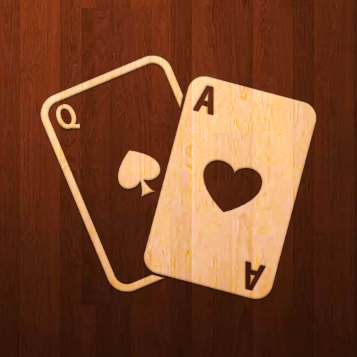

Карточная · 4 игрока · играется без интернета
Червы
Игра наоборот: выигрывает не тот, кто набрал больше, а тот, кто набрал меньше всех. Каждая червовая карта стоит очко, дама пик — сразу тринадцать. Задача — сбрасывать опасные карты соперникам и не остаться со взяткой.
APK ставится вручную — разрешите установку из неизвестных источников.
Что внутри
- Классические правила: черви по очку, дама пик — тринадцать
- Партия на четверых против соперников на устройстве
- Передача трёх карт перед раздачей
- Спокойный интерфейс без лишних кнопок
- Работает офлайн, реклама не мешает партии
Что нового
-
2.18 3 сентября 2026
- Поддержка Android 16
-
2.17 15 мая 2025
- Поддержка Android 15
- Оптимизирован размер приложения
Скриншоты
Нажмите на снимок, чтобы открыть его целиком.